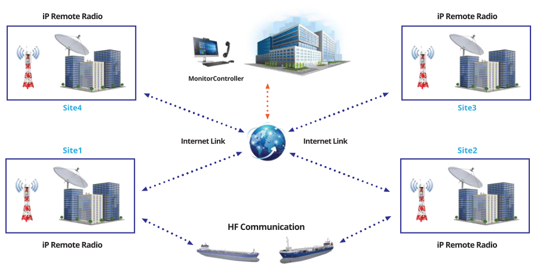
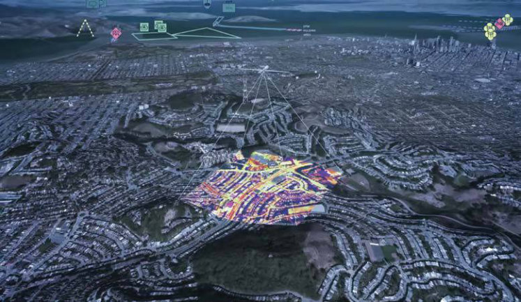
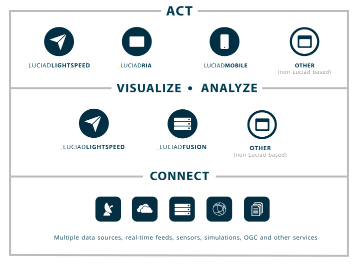

<!DOCTYPE html>
<html lang="en">
  <head>
    <!-- Required meta tags -->
    <meta charset="utf-8" />
    <meta name="viewport" content="width=device-width, initial-scale=1" />
    <!-- Bootstrap CSS -->
    <link href="../css/css_mitg.css" rel="stylesheet">
    <link href="../css/css_bootstrap5_mitg.css" rel="stylesheet">
    <!-- <link href="https://cdn.jsdelivr.net/npm/bootstrap@5.0.1/dist/css/bootstrap.min.css" rel="stylesheet" integrity="sha384-+0n0xVW2eSR5OomGNYDnhzAbDsOXxcvSN1TPprVMTNDbiYZCxYbOOl7+AMvyTG2x" crossorigin="anonymous" /> -->
    <link href="https://cdn.jsdelivr.net/npm/bootstrap-icons@1.5.0/font/bootstrap-icons.css" rel="stylesheet">

    <script type='text/javascript' src='https://cdnjs.cloudflare.com/ajax/libs/jquery/3.2.1/jquery.min.js'></script>
    <link rel="stylesheet" href="https://cdnjs.cloudflare.com/ajax/libs/OwlCarousel2/2.3.4/assets/owl.theme.default.css">
    <title>MultiIntegra Website</title>
  </head>
  <body>
    <header>
      <!-- Navbar -->
      <nav class="navbar navbar-expand-lg navbar-light bg-light fixed-top shadow" id="menu">
        <div class="container">
          <!-- logo MITG -->
            <a class="navbar-brand mt-2" href="../index.html">
              
            </a>
          <!-- Menu Navbar -->
          <button class="navbar-toggler" type="button" data-bs-toggle="collapse" data-bs-target="#navbarNavDropdown" aria-controls="navbarNavDropdown" aria-expanded="false" aria-label="Tog 3zgle navigation">
            <span class="navbar-toggler-icon"></span>
          </button>
          <div class="collapse navbar-collapse" id="navbarNavDropdown">
            <ul class="navbar-nav ms-auto">
              <li class="nav-item">
                <a class="nav-link ps-4 pe-4 border-start" aria-current="page" href="../index.html">HOME</a>
              </li>
              <li class="nav-item dropdown">
                <a class="nav-link active dropdown-toggle ps-4 pe-4 border-start" href="../solution.html" id="navbarDropdownMenuLink" role="button" data-bs-toggle="dropdown" aria-expanded="true">SOLUTIONS </a>
                <ul class="dropdown-menu dropdown-menu-end fade-up shadow" aria-labelledby="navbarDropdownMenuLink">
                  <div class="row">
                  <li><a class="dropdown-item pt-2 pb-2 ps-3 pe-4" href="../solution/military_law_enforcement.html">Military & Law Enforcement</a></li>
                  <li><a class="dropdown-item pt-2 pb-2 ps-3 pe-4" href="../solution/maritime_technology.html">Maritime Technology</a></li>
                  <li><a class="dropdown-item pt-2 pb-2 ps-3 pe-4 active" href="../solution/security_intelligence.html">Security Intelligence</a></li>
                  <li><a class="dropdown-item pt-2 pb-2 ps-3 pe-4" href="../solution/professional_information_technology.html">Professional Information Technology</a></li>
                  <li><a class="dropdown-item pt-2 pb-2 ps-3 pe-4" href="../solution/radio_telecommunication.html">Radio & Telecommunication</a></li>
                  <li><a class="dropdown-item pt-2 pb-2 ps-3 pe-4" href="../solution/aviation_navigation.html">Aviation & Navigation</a></li>
                  </div>
              </ul>
              </li>
              <li class="nav-item dropdown">
                <a class="nav-link dropdown-toggle ps-4 pe-4 border-start" href="../about.html" id="navbarDropdownMenuLink" role="button" data-bs-toggle="dropdown" aria-expanded="true">ABOUT</a>
                <ul class="dropdown-menu dropdown-menu-end fade-up shadow" aria-labelledby="navbarDropdownMenuLink">
                    <div class="row align-items-start dropdown-about">
                        <li><a class="dropdown-item pb-2 pt-2 ps-4" href="../about.html">Who We Are</a></li>
                        <li><a class="dropdown-item pb-2 pt-2 ps-4" href="../contact.html">Contact Us</a></li>
                        <li><a class="dropdown-item pb-2 pt-2 ps-4" href="../photo_gallery.html">Photo Gallery</a></li>
                        <li><a class="dropdown-item pb-2 pt-2 ps-4" href="../project_sites.html">Project Sites</a></li>
                        <li><hr class="dropdown-divider ms-3 me-3"></li>
                        <li><a class="dropdown-item pb-2 pt-2 ps-4" href="../customer_list.html">Customer List</a></li>
                        <li><a class="dropdown-item pb-2 pt-2 ps-4" href="../global_partner.html">Global Partner</a></li>
                    </div><!-- end row -->
              </ul>
              </li>
              <li class="nav-item">
                <a class="nav-link ps-4 pe-4 border-start" href="../news.html">NEWS</a>
              </li>
            </ul>
          </div>
        </div>
      </nav>      <!-- Akhir Navbar -->
      <!-- Akhir Navbar -->
    </header>

    <!-- Isi -->
    <!-- Judul atas -->
    <div class="container-fluid judul_halaman_atas_batik">
      <div class="container pt-3 pb-5">
        <div class="col-lg-5 col-md-8 col-sm-12">
          <h1 class="fw-light"><b class="fw-bold">SECURITY</b><br>INTELLIGENCE</h1>
          
        </div>
      </div>
    </div>
    <div class="container-fluid background_solution pb-5">
    <div class="container">
      <nav style="--bs-breadcrumb-divider: '>';" aria-label="breadcrumb">
        <ol class="breadcrumb pb-3">
          <li class="breadcrumb-item"><a class="link_isi" href="../solution.html">SOLUTION PROVIDER</a></li>
          <li class="breadcrumb-item active" aria-current="page">
              <li class="nav-item dropdown-menu-sm-end">
                <a class="link_isi dropdown-toggle pt-0 pb-0 ps-0 active" href="#" id="navbarDropdownMenuLink" role="button" data-bs-toggle="dropdown" aria-expanded="true">Security Intelligence</a>
                <ul class="dropdown-menu dropend-menu-sm-end shadow" aria-labelledby="navbarDropdownMenuLink">
                  <li><a class="dropdown-item pt-2 pb-2 ps-4 pe-4" href="military_law_enforcement.html">Military & Law Enforcement</a></li>
                  <li><a class="dropdown-item pt-2 pb-2 ps-4 pe-4" href="maritime_technology.html">Maritime Technology</a></li>
                  <li><a class="dropdown-item pt-2 pb-2 ps-4 pe-4 active" href="security_intelligence.html">Security Intelligence</a></li>
                  <li><a class="dropdown-item pt-2 pb-2 ps-4 pe-4" href="professional_information_technology.html">Professional Information Technology</a></li>
                  <li><a class="dropdown-item pt-2 pb-2 ps-4 pe-4" href="radio_telecommunication.html">Radio & Telecommunication</a></li>
                  <li><a class="dropdown-item pt-2 pb-2 ps-4 pe-4" href="aviation_navigation.html">Aviation & Navigation</a></li>
                </ul>
              </li>
          </li>
        </ol>
      </nav>
      <div class="row pb-5">
        <div class="col-12 col-lg-4 col-md-12 me-2 mb-5">
          <div class="list-group list-group-flush" id="list-tab" role="tablist">
            <a class="pb-3 pt-3 list-group-item list-group-item-action list-group-item-light active" id="list-ip-remote-radio-list" data-bs-toggle="list" href="#list-ip-remote-radio" role="tab" aria-controls="list-ip-remote-radio">IP Remote Radio</a>
            <a class="pb-3 pt-3 list-group-item list-group-item-action list-group-item-light" id="list-GIS-list" data-bs-toggle="list" href="#list-GIS" role="tab" aria-controls="list-GIS">GIS Data Within an Integrated 3d & 2d Environment</a>
        </div>
        </div>
        <div class="col-12 col-lg-7 col-md-12 col-sm-12 ps-4 border-start">
          <div class="tab-content" id="nav-tabContent">
            <div class="tab-pane fade show active" id="list-ip-remote-radio" role="tabpanel" aria-labelledby="list-ip-remote-radio-list">
                <h3 class="col-lg-12 col-md-8 col-sm-12">IP Remote Radio</h3>
                
                
                <div class="applicable_for">
                  <div><h5 class="red_dot d-inline-flex">Applicable For</h5></div>
                  <div class="row">
                  <div class="col-lg-6 col-md-6 col-sm-12 list_mitg">
                    <ul>
                      <li>Governments</li>
                      <li>Army, Navy, AirForce, Police</li>
                      <li>Coast Guard</li>
                      <li>Fisheries</li>
                      <li>SAR Organization</li>
                    </ul>
                  </div>
                  <div class="col-lg-6 col-md-6 col-sm-12 list_mitg py-0" >
                    <ul>
                      <li>Coastal Station</li>
                      <li>Offshore / Onshore Operation</li>
                      <li>Remote Vital Object Protection</li>
                      <li>Command Center</li>
                    </ul>
                  </div>
                </div>
                </div>
                <p>
                  IP Remote Radio - capable to integrate the MF / HF / VHF and UHF Radio. IP Remote Radio consist of IP-based radios that can be operated to cover unlimited distance. IP Remote Radio can be installed at a locations but able to cover from anywhere.
                </p>
                <p>
                  IP remote radio at each locations connected to the Internet so that it can be operated from a central office that have radio server and monitor radio operators installed.
                </p>
                  <h5>Radio Remote IP advantages:</h5>
                  <ul>
                    <li>IP based / can be operated for unlimited distance</li>
                    <li>Capable of recording sounds and messages</li>
                    <li>Capable to control the radio setting such as channel, squelch, power, volume etc remotely</li>
                    <li>Support for unmanned radio site</li>
                    <li>Open and modular system architecture to make easy on future development</li>
                    <li>Capable to do some radio operation in one radio workstation site</li>
                    <li>Able to receive DSC messages</li>
                    <li>Capable to know the status of radio site / maintenance remotely</li>
                    <li>GIS (Geographical Information System) solution featuring the fleet position on a map based on the message AIS and DSC messages</li>
                    <li>The operator using the touch screen display and easy to operate i. Can be integrated with PBX / IP phone.</li>
                    <li>Compatible with all analog (non-IP) radio products</li>
                  </ul>
              </div>
              <div class="tab-pane fade" id="list-GIS" role="tabpanel" aria-labelledby="list-GIS-list">
                <h3 class="col-lg-12 col-md-8 col-sm-12">GIS Data Within an Integrated 3d & 2d Environment</h3>
                
                
                <div class="applicable_for">
                  <div><h5 class="red_dot d-inline-flex">Applicable For</h5></div>
                  <div class="row">
                    <div class="col-lg-6 col-md-6 col-sm-12 list_mitg">
                      <ul>
                        <li>Aviation</li>
                        <li>Defense & Intelligence</li>
                        <li>Maritime</li>
                        <li>Transportation</li>
                      </ul>
                    </div>
                  </div>
                </div>
                <p><h5>LuciadLightspeed</h5>
                  is a modular and extensible desktop solution for geospatial situational awareness. It provides the foundations for advanced geospatial analysis applications. Thanks to its modular, open architecture and meticulous adherence to industry standards, LuciadLightspeed is the preferred technology for enterprise-wide geospatial situational awareness.
                </p>
                <p>
                  LuciadLightspeed’s is Luciad’s flagship product. LuciadLightspeed consists of a set of highly flexible software components connectors allow users to fuse, visualize, and analyze geospatial data. This can include static and moving data, maps, satellite imagery, crowd-sourced data, full motion video, weather data, and terrain elevation in many different geodetic references and map projections. Geo-fencing, line-of-sight calculations, geo-triggered events, dynamic and complex route calculations, and automated anomaly detection are just a mouse click away. Benchmark tests by academia and industry have found LuciadLightspeed to be more than 100 times faster and more accurate than traditional GIS software.
                </p>
                <h5>Advantages of LuciadLightSpeed:</h5>
                <ul>
                  <li>Accurate, High Performance Results</li>
                  <li>Visual Analytics for Intuitive Answers</li>
                  <li>Connect to various data sources</li>
                  <li>Focus on Customizability and Integration</li>
                </ul>
                <hr class="mb-5 mt-5">
                <p><h5>LuciadRIA</h5>
                  is the answer to today’s demands for powerful, lightweight applications in the browser. Driven by today’s most advanced web technologies, LuciadRIA uses WebGL, HTML5, and JavaScript to deliver desktop-like performance to your web applications. Using its configurable API, you can add support for custom data feeds, add your own symbology or match user interaction and look and feel to your company’s needs and style. LuciadRIA offers a single visualization API for 2D and 3D, with or without hardware acceleration.
                </p>
                
                <p>
                  With LuciadRIA, you can expect high performance and complete accuracy, with desktop-like visualization of satellite  and other imagery, vector-based data, and dynamic content, such as tracks. Data can be explored in a 2D or 3D map view or vertical intersection view.</p>
                  <h5>Advantages of LuciadRIA:</h5>
                  <ul>
                    <li>From 2D to 3D with the Click of a Button</li>
                    <li>Fully Leverages HTML5 Technology</li>
                    <li>Accelerated Visualization Done Right</li>
                  </ul>
              </div>
  
          </div>
        </div>
        </div>
      </div>
    </div>
    
    <!-- Footer -->
    <footer class="footer pt-5 bg-greyMI">
      <div class="container text-white">
        <div class="row">
          <div class="col-sm-5 col-md-5 col-lg-4 pb-5">
            <h5><a class="link_footer_h5" href="../solution.html"><b>SOLUTION PROVIDER</b></a></h5>
            <ul class="list-unstyled text-small ps-45">
              <li><a class="link_footer_tebal" href="../solution/military_law_enforcement.html">Military & Law Enforcement</a></li>
              <li><a class="link_footer_tipis" href="../solution/maritime_technology.html">Maritime Technology</a></li>
              <li><a class="link_footer_tebal" href="../solution/security_intelligence.html">Security Intelligence</a></li>
              <li><a class="link_footer_tipis" href="../solution/professional_information_technology.html">Professional Information Technology</a></li>
              <li><a class="link_footer_tebal" href="../solution/radio_telecommunication.html">Radio & Telecommunication</a></li>
              <li><a class="link_footer_tipis" href="../solution/aviation_navigation.html">Aviation & Navigation</a></li>
            </ul>
          </div>
          <div class="col-sm-5 col-md-5 col-lg pb-5">
            <h5><a class="link_footer_h5" href="../about.html"><b>ABOUT</b></a></h5>
            <ul class="list-unstyled text-small ps-45">
              <li><a class="link_footer_tebal" href="../about.html">Who We Are</a></li>
              <li><a class="link_footer_tipis" href="../contact.html">Contact Us</a></li>
              <li><a class="link_footer_tebal" href="../photo_gallery.html">Photo Gallery</a></li>
              <li><a class="link_footer_tipis" href="../project_sites.html">Project Sites</a></li>
              <li><a class="link_footer_tebal" href="../customer_list.html">Customer List</a></li>
              <li><a class="link_footer_tipis" href="../global_partner.html">Global Partner</a></li>
            </ul>
          </div>
          <div class="col-sm-5 col-md-5 col-lg pb-5 text-white">
            <h5 class="judul_footer_h5"><b>PT MULTIINTEGRA</b></h5>
            <p class="text_footer ps-45">Taman Berdikari Sentosa B-1D,</br>
            Jl. Pemuda, Jakarta Timur 13220</br>
            </br>
            Tel. : +62-21-4705108</br>
            Fax : +62-21-4705126</br>
            E-mail: info@multiintegra.co.id</p>
            </div>
          <div class="col-sm-5 col-md-5 col-lg pb-5">
            <div class="">
              <!-- Logo MITG -->
              <span></span>
            </div>
            <!-- Social Media -->
            <div class="ps-5 pe-5 pt-3">
              <div class="col-auto text-center align-content-center">
                <hr class="mb-2 pt-0">
                <p class="text_footer mb-0 pb-0">Follow Us :</p>
                <a href="https://www.instagram.com/multiintegratechnologygroup/" title="Follow MultiIntegra on Instagram" target="_blank" class="sosmed_instagram ps-2 pe-2"><i class="bi-instagram"></i></a>
                <a href="https://web.facebook.com/Multiintegra" title="Follow MultiIntegra on Facebook" target="_blank" class="sosmed_facebook ps-2 pe-2"><i class="bi-facebook"></i></a>
              </div>
          </div>
          </div>
        </div>
      </div>
    </footer>
    <!-- script -->
    <script src="https://cdnjs.cloudflare.com/ajax/libs/OwlCarousel2/2.2.1/owl.carousel.js"></script>
    <script src="https://cdn.jsdelivr.net/npm/bootstrap@5.0.1/dist/js/bootstrap.bundle.min.js" integrity="sha384-gtEjrD/SeCtmISkJkNUaaKMoLD0//ElJ19smozuHV6z3Iehds+3Ulb9Bn9Plx0x4" crossorigin="anonymous"></script>
    <script src="../js/mitg.js"></script>
  </body>
</html>
